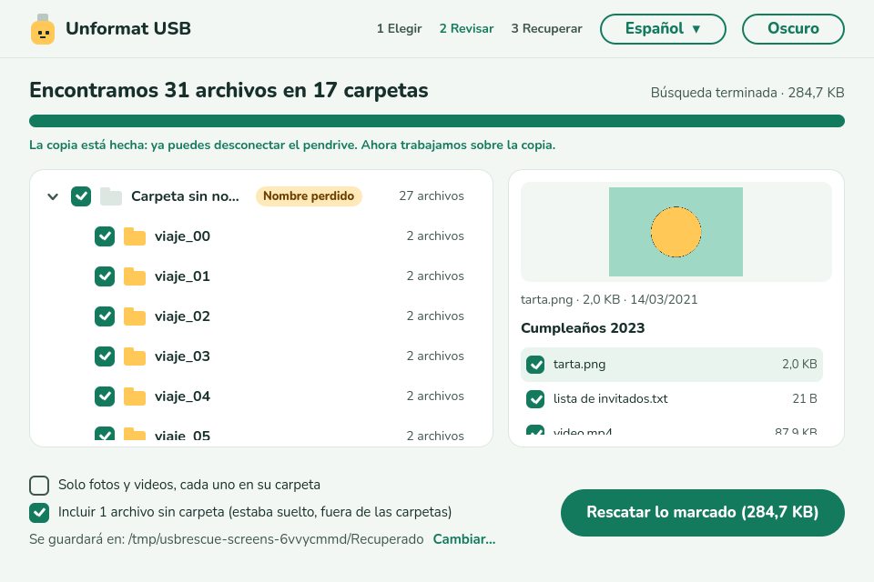
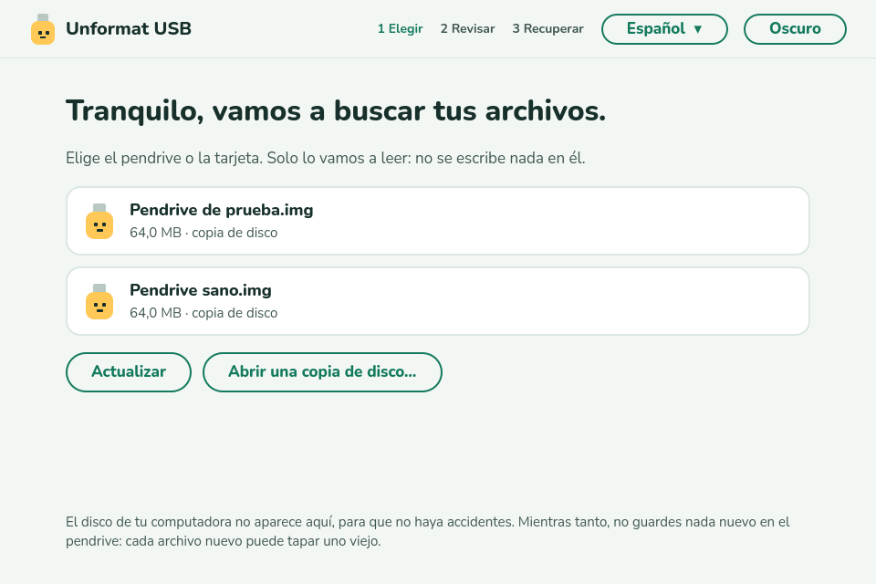
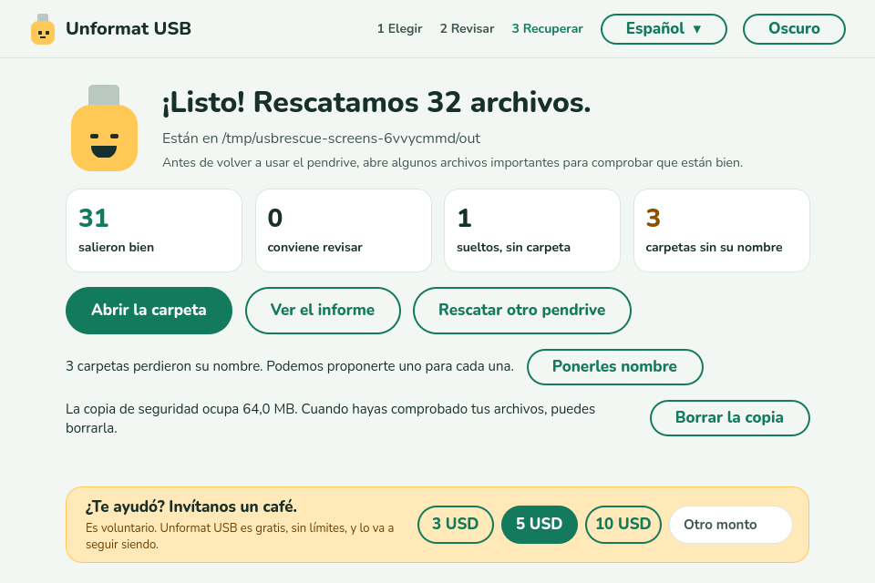
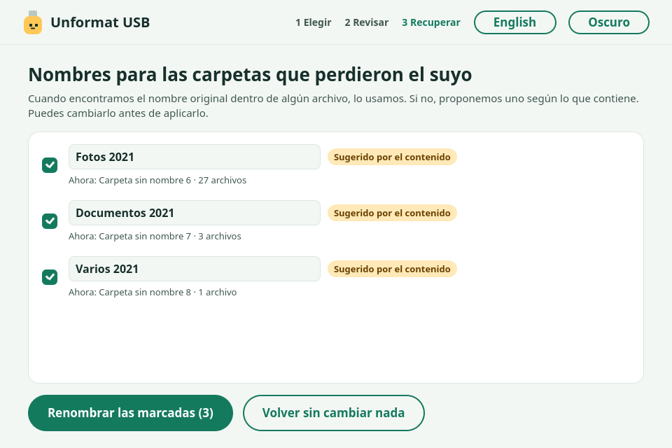

¿Formateaste tu pendrive por error?
Lo más probable es que tus archivos sigan ahí. Unformat USB los encuentra y los recupera con sus carpetas. Gratis, sin límites, y nunca escribe nada en la unidad.
Versión 0.1.1 · español, inglés y portugués · aún sin firmar: Windows puede mostrar un aviso, elige Más información → Ejecutar de todas formas. Linux →

Primero, antes que nada
- Deja de usar el pendrive. No copies nada nuevo: cada archivo nuevo puede tapar uno antiguo.
- No lo vuelvas a formatear ni dejes que un programa lo “repare”.
- Déjalo desconectado hasta tener el programa listo.
Cómo funciona
- 1
Elige el pendrive
Solo aparecen unidades externas y tarjetas, así no eliges por error el disco de tu computadora.
- 2
Mira aparecer tus carpetas
Muestra lo que encuentra mientras busca, con vista previa. Marca lo que quieres.
- 3
Rescata
Los archivos se copian a tu computadora, nunca al mismo pendrive.
Qué hace
Reconstruye tus carpetas
Con sus nombres y contenido originales, incluidos videos grandes guardados en pedazos.
Gratis de verdad
Sin límite de 100 MB o 500 MB, sin prueba, sin cuenta. Recupera todo.
Solo lectura
Nunca escribe, repara ni formatea la unidad, y no deja guardar el rescate en ella.
Modo seguro
Primero copia todo el pendrive a tu computadora y trabaja sobre la copia. Ideal si la unidad está fallando.
También archivos sueltos
Los que estaban fuera de las carpetas vuelven con un nombre según su contenido (la fecha de una foto, el título de un documento).
Nombra carpetas perdidas
Sugiere un nombre para las carpetas que perdieron el suyo. Tú apruebas, y se puede deshacer.
Solo fotos y videos
Con una marca, recuperas solo tus fotos y videos, cada uno en su carpeta.
Privado
Funciona sin internet. No envía nada sobre ti ni tus archivos.
Por dentro



Cuándo no puede ayudar
Para ser claros: después de un formateo completo (escribe ceros en todo), de usar mucho el pendrive tras formatearlo, o en un SSD/NVMe (el sistema borra solo el espacio libre), puede que no quede nada. Unformat USB te lo dice en vez de prometer lo que no puede. Funciona con exFAT y FAT32, los formatos de casi todos los pendrives y tarjetas; NTFS todavía no.
Preguntas
¿Se pueden recuperar archivos después de formatear un pendrive?
Normalmente sí. Un formateo rápido, el que hacen por defecto Windows, macOS y Linux, solo borra el índice. Los archivos siguen en su lugar hasta que se escribe algo nuevo encima.
¿De verdad es gratis?
Sí. Sin límites, sin prueba, sin anuncios en el programa. Es código abierto (GPL-3.0). Si te ayuda, puedes invitarnos un café, pero no es obligatorio.
¿Funciona con tarjetas SD y microSD?
Sí, con cualquier tarjeta o pendrive en exFAT o FAT32, usando un lector o adaptador.
¿Puede dañar mi pendrive?
No. Solo lee. Nunca escribe, repara ni formatea la unidad, y no guarda los archivos rescatados en el mismo pendrive.
¿Por qué Windows pide permisos de administrador?
Para leer la unidad completa, por debajo de sus archivos, hacen falta. Es la única razón.
Windows dice “Windows protegió su PC”. ¿Es seguro?
El programa todavía no está firmado (el certificado está en trámite). Elige “Más información” y “Ejecutar de todas formas”. El código es público y cada versión se compila y prueba automáticamente en GitHub.
¿Te sirvió?
Unformat USB es gratis y lo va a seguir siendo. Si recuperó tus archivos, puedes invitarnos un café.